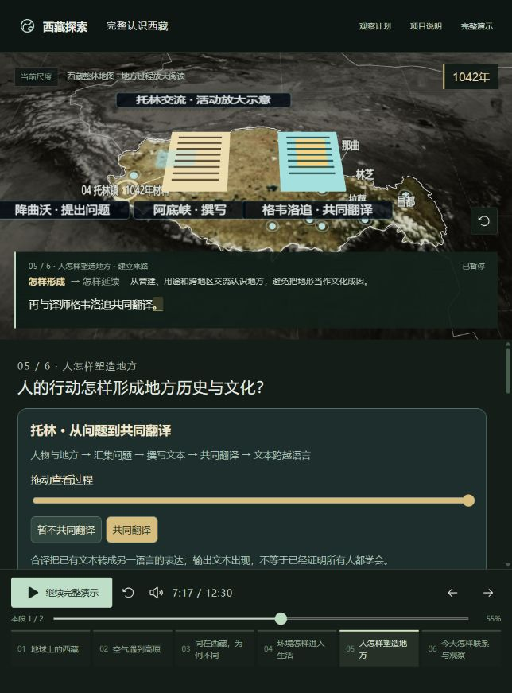
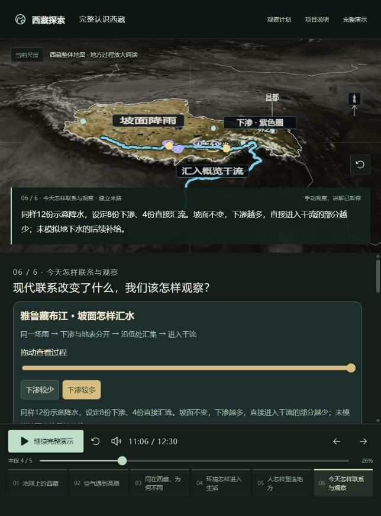
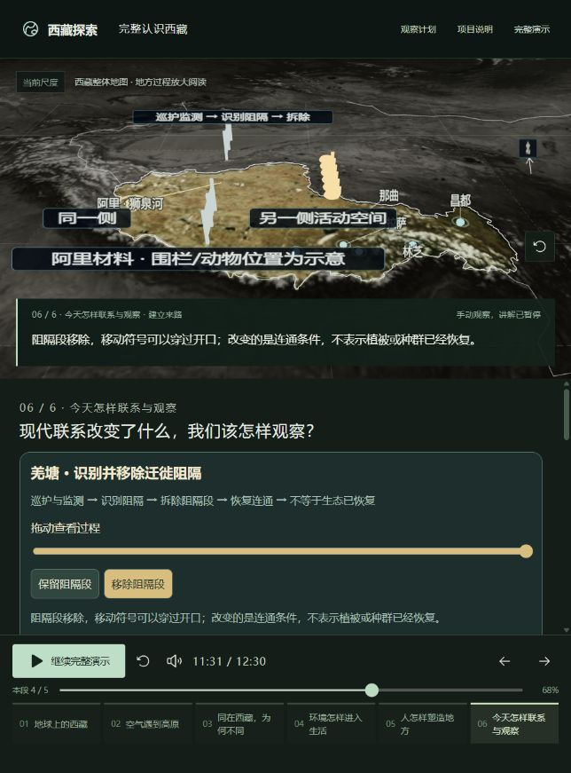

2026-10-18 · V1-main-20261018.2
把三处“提到”变成可操作的过程。
托林交流 → 坡面汇水 → 具体管护。继续使用同一张地图，逐字语音时间轴驱动画面；操作暂停原句，恢复时清除比较条件。
本次收口范围
| 过程 | 资料支持什么 | 实际变化与验收 |
|---|---|---|
| 托林交流 | 1042年到托林；研究据传记记载提问、撰文、合译。手稿和活动位置为功能示意。 | 纸片汇集，文本写入，再生成合译文本。暂不合译时第二份文本消失；恢复原来的55%讲述位置继续。 |
| 坡面汇水 | 归档真实高程、概览干流与USGS水循环原理。D8计算路径不冒充实测支流。 | 同一降雨条件下，更多下渗对应更少直接汇流；雨点下降、坡向汇集、到达干流。26%原句暂停比较，拖回降雨后恢复原条件与原句。 |
| 羌塘管护 | 2023年黄晨巡护、监测和拆除阻碍迁徙围栏的报道。未声称生态已经恢复。 | 保留阻隔时停在同侧；移除阻隔后穿过开口。倒拖可回到巡护阶段；68%原句恢复后继续。围栏位置和移动符号不作为测绘事实。 |
本轮实际检查与修复
独立浏览器页实际播放了两个替换段，并检查相关接续：历史形成自然接回大昭寺保护；维护段回到整体后进入旅游观察。三处均检查比较、倒拖和原句恢复。未重新播放其余冻结章节，也没有把程序测试代替首次观看者理解。
- 修正托林活动说明靠近地图边缘被裁切的问题，并移开本段不必要的历史条。
- 修正撰写、移除阻隔尚在进行时，反馈提前宣告结果的问题。
- 加粗坡向路径、缩小遮住地形的点标记，汇水时同图适度靠近南部地形；恢复原讲述时一并恢复。
- 修正倒拖降雨时残留上一次汇流金色的状态；回退重新显示全部降雨示意。
56项针对性检查、类型检查和构建通过。构建保留原有709kB运行时分包提示。浏览器画面与操作检查是离散观察，不是连续逐帧录像。
时长与冻结
仍为六章、21段。只替换历史形成与共同维护两段录音，总时长701.424秒 → 750.024秒，增加48.6秒，约12:30；没有把增加隐藏在旧基线里。其余19段的文本、时长和逐字文件哈希逐项保持。保留原始V1.1基线供比较。
实际画面



明确保留的限制
没有系统音频回录，因此未声称音色、发音或听感逐句验收通过。原生语音时间轴、字幕、画面状态和返回已核对。正式首次观看者理解验收仍未完成，本轮不再要求当前用户逐项陪测。
汇水不是完整水文模型，活动演示不是历史测绘或实测迁徙复原。三处按“变化可见、原因可解释、条件可对照、原句可恢复”完成本轮实现与助手验收；其余已完成部分冻结，不继续扩展模型和场景。